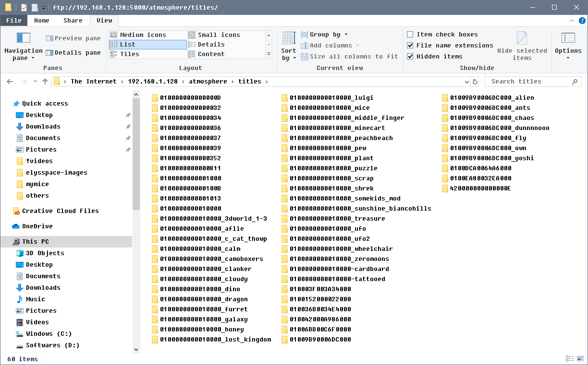

Keeping your system up-to-date
This page documents how you can keep your system up-to-date.
After following our guide, your system will consist of three core elements that can be updated. Atmosphere, Hekate and your system firmware.
Updating Atmosphere
When updating Atmosphere always make sure to read the release notes. They may list important changes and modifications to your system.
Manual method: SD card
When a new version of Atmosphere releases, you can always update Atmosphere by following these steps:
- Turn off your Nintendo Switch and plug your SD card in your computer.
- Download the latest release of Atmosphere (Download the
atmosphere-(version).ziprelease of Atmosphere.) - Copy the contents of the Atmosphere
.zipfile to the root of your SD card.- If you are prompted to overwrite files, do so, except for the
.inifiles. - If you do accidentally overwrite the
.inifiles, this is not an emergency but you will lose any changes you made to Atmospheres settings.
- If you are prompted to overwrite files, do so, except for the
- Put your SD card back in your Switch and launch CFW.
FTP method: FTP access to your sd card.
I prefer this method because I try to avoid pulling out sd card unnecessarily.
you should have the ftpd app in your hbmenu if you followed the guide.
- Open the Homebrew menu
- Open
ftpd. - Note the switch ip and port on your switch screen.
- go on your pc and open windows explorer or ftp client.
- type in switch ip and ftp port (5000) in the address bar and press enter.
- The explorer should open up your sd card centents. Make sure you are in the root of your sd card in the window.
- Download the latest release of Atmosphere (Download the
atmosphere-(version).ziprelease of Atmosphere.) - Copy the contents of the Atmosphere
.zipfile to the root of your SD card.- If you are prompted to overwrite files, do so, except for the
.inifiles. - If you do accidentally overwrite the
.inifiles, this is not an emergency but you will lose any changes you made to Atmospheres settings.
- If you are prompted to overwrite files, do so, except for the
- Exit the ftpd by press B two times. once you go back to hbmenu, tap on reboot to payload to reboot the atmosphere CFW.

you can watch me updating my atmosphere using ftp method.
Updating Atmosphere fusee-primary.bin payload
It is important that you update the fusee-primary.bin payload.
you can get latest fusee-primary.bin from Atmosphere (Download the fusee-primary.bin release of Atmosphere.)
It depends how are you injecting your payloads.
- tegraguircm: replace fusee-primary.bin in your favorites folder with latest fusee-primary.bin
- rcmloader: plug your rcmloader in your computer usb port and it should bring up a drive and
you should replace the payload.bin in atmosphere folder. it may be named differently. delete payload.bin then copy fusee-primary.bin and rename it to payload.bin
- hekate: replace fusee-primary.bin in /bootloader/payloads with latest fusee-primary.bin (for trinket m0/mod chip users/hekate users)
- Download the latest release of Atmosphere (Download the
atmosphere-(version).ziprelease of Atmosphere.)
Updating Hekate
When updating Hekate always make sure to read the release notes. They may list important changes and modifications to your system.
Manual method: SD card
When a new version of Hekate releases, you can always update by following these steps:
- Turn off your Nintendo Switch and plug your SD card in your computer.
- Download the latest version of Hekate (Download the
hekate_ctcaer_(version).ziprelease of hekate). - copy over the
bootloaderfolder with the newbootloaderfolder from the hekate zip on your SD card. - Put your SD card back in your Switch and launch CFW.
FTP method: FTP access to your sd card.
I prefer this method because I try to avoid pulling out sd card unnecessarily.
you should have the ftpd app in your hbmenu if you followed the guide.
- Open the Homebrew menu
- Open
ftpd. - Note the switch ip and port on your switch screen.
- go on your pc and open windows explorer or ftp client.
- type in switch ip and ftp port (5000) in the address bar and press enter.
- The explorer should open up your sd card centents. Make sure you are in the root of your sd card in the window.
- Download the latest version of Hekate (Download the
hekate_ctcaer_(version).ziprelease of hekate). - copy over the
bootloaderfolder with the newbootloaderfolder from the hekate zip on your SD card.
Updating your firmware
Always check before updating your system firmware if the latest version of Atmosphere as well as the latest version of Hekate support the firmware version you are updating towards.
Currently the latest version supported by Atmosphere and Hekate are: 10.2.0.
In addition, updating to or past some firmwares update the gamecard firmware. Reference the table below for information about these.
| Updating from | Updating towards | Updates gamecard firmware |
|---|---|---|
| Below 4.0.0 | Below 4.0.0 | No |
| Below 4.0.0 | 4.0.0 or above | Yes |
| On or above 4.0.0, but below 9.0.0 | At least 4.1.0 but below 9.0.0 | No |
| On or above 4.0.0, but below 9.0.0 | 9.0.0 or above | Yes |
| On or above 9.0.0 | Latest supported Atmosphere & Hekate revision | No |
If at least one of the versions you are updating towards also updates the gamecard firmware, you will not be able to downgrade below that version without making the gamecard slot unusable until you update.
Atmosphere (and Hekate) come bundled with patches that automatically disable the gamecard slot if it is detected that the system has an older gamecard firmware that would be updated. If you boot into RCM on each boot (for example by using AutoRCM), this means that the gamecard slot will not be updated and you can downgrade below that version. If this happens, you will not be able to use the gamecard slot as long as you are on the newer firmware.
Otherwise, you can safely update your system firmware through the system settings.
Note about autoRCM
If you have autoRCM enabled and you're updating your system while in stock firmware, updating will disable autoRCM and you will need to enter RCM manually to boot custom firmware again. To prevent autoRCM from being disabled, boot CFW on sysMMC and update through settings from there, as booting without AutoRCM will burn any preserved fuses.
About emuMMC
sysMMC and emuMMC have separate system firmwares and need to be updated separately.
If you keep your emuMMC offline, you will have to use a gamecard to update your system firmware, synchronize it with another Nintendo Switch or dump an updated firmware from your sysMMC.
Updating emuMMC by dumping an updated firmware from your sysMMC
Do you have an eMMC backup yet?
Please do not start this guide without doing a RAW GPP and a BOOT 0/1 eMMC backup!
You can learn how to make one here.
Downgrading
This guide is made for updating your emuMMC. It is not for downgrading. Downgrading at all, sysMMC or emuMMC, is not recommended and not worth it. Downgrading is also very dangerous and can lead to serious complications even when performed correctly.
What you will need
- The latest release of TegraExplorer
- The latest release of Atmosphere
- Your prod.keys file (if you don't have them, use Lockpick_RCM to dump them)
Preparing your SD card
- Insert your microSD card into your computer.
- Download
TegraExplorer.binand place it somewhere on your PC (A good idea is to put it where you keep all your switch payloads like Hekate). - Update Atmosphere and Hekate by using the above guides.
- If you haven't already, update the sysMMC to the latest firmware.
Dumping your sysMMC firmware
- Make sure your sysMMC is up to date. If your sysMMC is not up-to-date, update it through the System Settings.
- Inject
TegraExplorer.binusing TegraRCMGUI (Like you would with Hekate). - Using the volume and power buttons, select
Tools, thenDump Firmwareand for the format type chooseDaybreak. - Wait about 1-2 minutes for the tool to dump your firmware.
- When the tool finishes, press any volume button.
- Select
Exitand thenReboot to Atmosphere.
Updating your emuMMC with Daybreak
- In Hekate go to
Launch -> Atmosphere FSS0 Emu. - Once booted, hold
Rwhile launching a game to boot into the homebrew menu. - Find Daybreak in the homebrew menu and launch it.
- Tap on
Installand navigate totegraexplorer/Firmware/<latest firmware number>. - Tap on
Continueand thenPreserve settings.- If you see the message
Warning: exFAT firmware is missing or corrupt, you likely don't have the exFAT drivers installed on your sysMMC. Just press continue if this is the case.
- If you see the message
- If it is available choose
Install (FAT32 + exFAT), otherwiseInstall (FAT32)and thenContinue. - Wait until Daybreak completes installing the dumped firmware.
- Once it completes, it will ask if you want to reboot. Tap
Reboot. - Once rebooted, launch into emuMMC and verify your system works. You can verify your system has been properly updated in
Settings -> System.